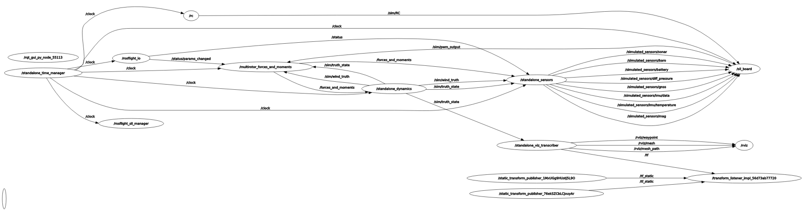
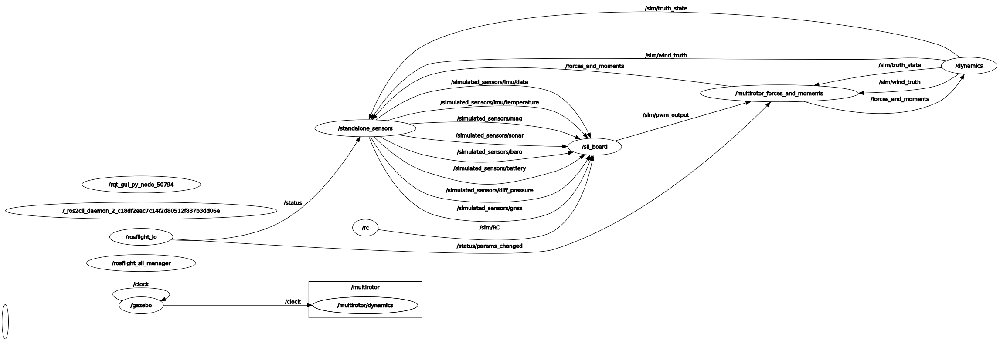

Detailed Launching Guide¶
Detailed launching instructions for the rosflight_sim module.
For a quick tutorial on running the standalone_sim, see the simulator tutorials.
Launch parameters
This document describes a lot of the launch-time arguments that can be passed to the launch files to configure the simulation. To see a complete list of the launch-time arguments, run a launch command with
ros2 launch <package_name> <launch_file_name> --show-args
A note on sims and viz¶
A simulator includes many different modules, such as dynamic propagation, sensor creation, forces and moments computation, etc. One of these modules is the visualization module, that provides the graphical element to the simulator. Different visualizers provide different functionality and require different information. For example, Gazebo Classic handles the dynamic propagation (integration) for users, while a simple visualizer like RViz does not.
Since each visualizer in large part determines what other functionality the simulator modules need to provide, they are tightly coupled. Thus, in this guide, we will refer interchangeably between simulator and visualizer.
The rosflight_sim architecture has been designed to be as modular as possible in order to adapt as easily as possible to the different needs of various visualizers.
See the simulation architecture page for more information.
Sims that ship with rosflight_sim¶
The ROSflight simulation module was designed to be as modular as possible, in order to support different simulation and visualization needs. Currently, we support 2 visualizers out-of-the-box:
- A "standalone" visualizer using ROS2 RViz tool (recommended)
- Gazebo Classic
Adding your own visualizer is part of what rosflight_sim was designed for.
See the instructions on adding your own visualizer page for more information on plugging in your simulator into rosflight_sim.
This following sections detail how to launch and debug these two simulators.
New to ROSflight?
If you are new to ROSflight, we recommend that you first start by setting up the simulation environment and learning to use the ROSflight ecosystem. Do this by following the installation for sim guides, and then the ROSflight tutorials.
This guide assumes you have already followed these tutorials.
Note
To simulate a fixed-wing mav, just change all instances of multirotor in the steps below to fixedwing.
Standalone Sim¶
The "standalone" sim is a simulator that uses ROS2 RViz to visualize aircraft motion.
Launching instructions¶
-
Set up rosflight with the software installation for sim guide guide, making sure to install the
-desktoppackage of ROS2, not the-ros-base. -
The standalone sim for ROSflight SIL is usually launched using this launch file:
ros2 launch rosflight_sim multirotor_standalone.launch.py -
The standalone sim should now be running! RViz should open with the STL of the multirotor, and you should have the following
rqt_graph.
|  |
|---|
| RQT graph of the nodes involved in the standalone simulator. Click on the figure to enlarge. |
{kind=link}
Tip
Run rqt_graph with rqt_graph the in a new terminal, assuming the -desktop version of ROS2 was installed.
Explanation¶
The launch file manages launching several nodes all at once, as shown in the rqt_graph image:
/rosflight_io: Handles the communication between the companion computer and the flight controller/standalone_sensors: Simulates sensor measurements given the true state of the robot/rc: Simulates the RC safety pilot connection to the firmware/sil_board: Instantiation of the firmware/standalone_dynamics: Dynamics node for keeping track of the true robot state/multirotor_forces_and_moments: Computes aerodynamic forces and moments based on motor commands/standalone_time_manager: Only appears ifuse_sim_timeis set true. See the launch arguments/rviz: Visualizer/standalone_viz_transcriber: Manages publishingrosflight_siminformation to RViz- 3 transform listener nodes: Manage coordinate frame transformations to RViz
For more information on each of these nodes, see the simulator architecture page.
Running nodes individually¶
If you don't want to use the launch file, you can instead run all of the nodes individually in separate terminals with the appropriate parameters.
For example, to run just the /multirotor_forces_and_moments node, you would run
ros2 run rosflight_sim multirotor_forces_and_moments --ros-args --params-file /path/to/rosflight_ws/src/rosflight_ros_pkgs/rosflight_sim/params/multirotor_dynamics.yaml
Also note that the multirotor_standalone.launch.py file actually calls 2 other launch files--one specific to the standalone sim (standalone_sim.launch.py) and one that launches the nodes shared by both the fixedwing and multirotor simulators (common_nodes_standalone.launch.py).
You can also launch those files separately if you want--just make sure to also run the forces and moments node in addition to those two sub-launch files.
Warning
If you do run all nodes separately, make sure all the needed nodes are running.
You can verify this by checking that the rqt_graph is the same as the above image.
This is important since the nodes are chained together to complete a simulation loop.
A common source of error is forgetting to launch a node in the chain.
Forgetting to run the multirotor_forces_and_moments node, for example, will cause the standalone_dynamics node to not perform any updates.
Gazebo Classic¶
Danger
Gazebo Classic is officially EOL as of January 2025, and does not work with ROS2 Jazzy. If you are using ROS2 Jazzy, please only use the standalond sim. The following instructions assume you are using ROS2 Humble.
We have not yet upgraded to Gazebo, which is not EOL and better. If you would like to help in this effort, please visit the GitHub issue and let us know :)
Launching Instructions¶
Todo
Change the ROS2 setup instructions include details about Gazebo and skipping if you don't want it.
- Set up ROSflight by following the installation for sim guide
- Source the Gazebo Classic setup file if you haven't added it to
~/.bashrc:source /usr/share/gazebo/setup.sh -
Launch Gazebo Classic with the ROSflight SIL:
ros2 launch rosflight_sim multirotor_gazebo.launch.py aircraft:=multirotor -
Gazebo Classic should now be running! Gazebo should open and you should see the STL of the multirotor at the origin. You should have the following
rqt_graph. 
{kind=link}
Tip
Run rqt_graph with the command rqt_graph in a new terminal, assuming the -desktop version of ROS2 was installed.
Explanation¶
The launch file manages launching several nodes all at once, as shown in the rqt_graph image:
/rosflight_io: Handles the communication between the companion computer and the flight controller/standalone_sensors: Simulates sensor measurements given the true state of the robot/rc: Simulates the RC safety pilot connection to the firmware/sil_board: Instantiation of the firmware/gazebo: Visualizer/multirotor/dynamics: Dynamics plugin to Gazebo Classic, computes the aerodynamic forces and moments given motor commands/dynamics: Interface node between the dynamics plugin and the rest of therosflight_simmodules
For more information on each of these nodes, see the simulator architecture page.
Running nodes individually¶
The same file structure was used for the Gazebo launch files as for the standalone launch files. If you want to run nodes individually, see the explanation above.
Launch arguments¶
Tip
Command line arguments to launch files can be previewed by appending --show-args to the launch call:
ros2 launch rosflight_sim multirotor_gazebo.launch.py --show-args
There are several command line arguments you can pass to customize the behavior at runtime. Here are some important ones:
aircraft: Defaults to "skyhunter". This parameter controls which dynamics and parameter files get loaded, in addition to the STL file for visualization. Make sure this is set to your correct airframe!use_sim_time: By default, set false. This parameter is a parameter of all nodes in ROS2. If set to true on launch, the node will create a subscription to the/clocktopic, and will use that as the source of time for its timers. For Gazebo Classic, it is recommended to leave this as false, since Gazebo Classic publishes a/clocktopic at 10Hz, which is too slow for most modules. If using the standalone sim, this parameter will allow you to speed up, slow down, or pause time. See the simulation architecture page for more information.use_vimfly: Node that changes the default RC behavior to use VimFly, a program that lets you use Vim commands to fly around in the sim! Vim, of course, is recommended for everyone, but VimFly especially if you don't have access to RC transmitter connected over USB. See the joystick section for more information on what joysticks are supported.
These command line arguments should be passed using the <argument>:=<value> syntax.
Joysticks¶
ROSflight supports several types of transmitters or controllers that you can use to fly around in the sim as the RC safety pilot. If one of the supported transmitters is connected via USB at launch time, then the sim will default to using that controller instead of the default, which is no RC connection. See the Hardware Setup guide for more information on joysticks.
Note
It is much easier to fly with a real transmitter than with an Xbox-type controller. FrSky Taranis QX7 transmitters, Radiomaster TX16s transmitters, and RealFlight controllers are also supported. Non-Xbox joysticks may have incorrect mappings. If your joystick does not work, and you write your own mapping, please contribute back your new joystick mapping!
If you want to fly around in the sim and you don't have access to a transmitter, we recommend using VimFly, which allows you to fly around in the sim with your keyboard.
To use VimFly, just add the use_vimfly:=true string to the end of the launch command.
Example
To launch the multirotor sim using the standalone simulator with VimFly, run
ros2 launch rosflight_sim multirotor_standalone.launch.py use_vimfly:=true
After launching¶
Remember that the SIL tries its best to replicate hardware. That means you have to calibrate and set parameters in the same way you do in hardware. If you need a reminder, please follow the configuration and manual flight tutorial.
See the Parameter Configuration pages in this documentation for instructions on how to perform all preflight configuration before the aircraft will arm.
You can also run
ros2 launch rosflight_sim multirotor_init_firmware.launch.py
Warning
Remember to verify that all parameters are set to the value that you would expect. Wrong parameters is a common source of error in sim and in hardware.